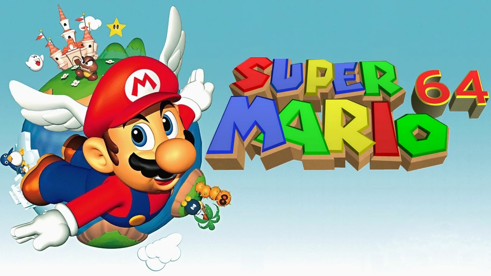
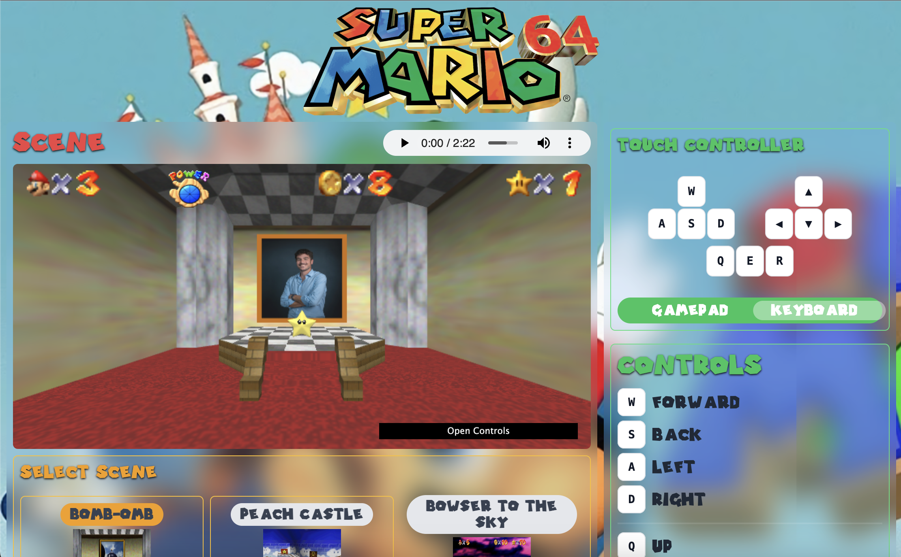
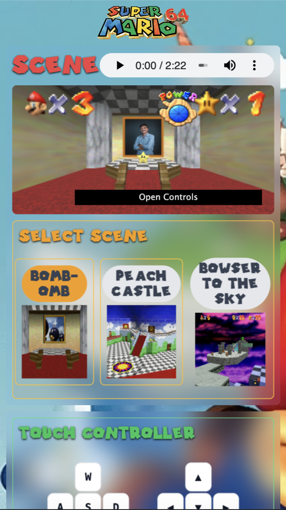
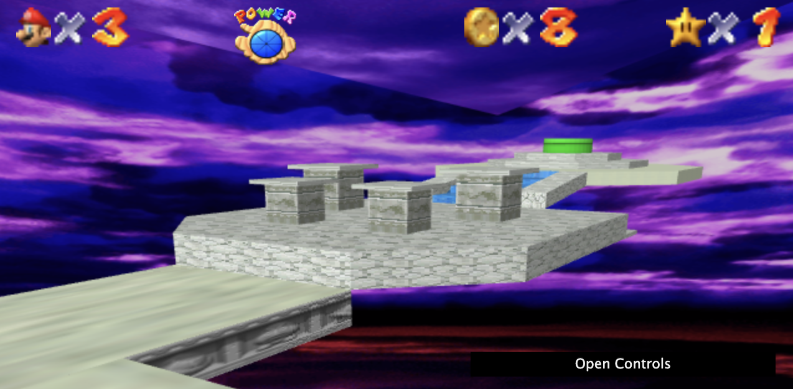
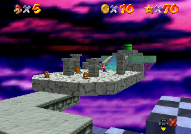
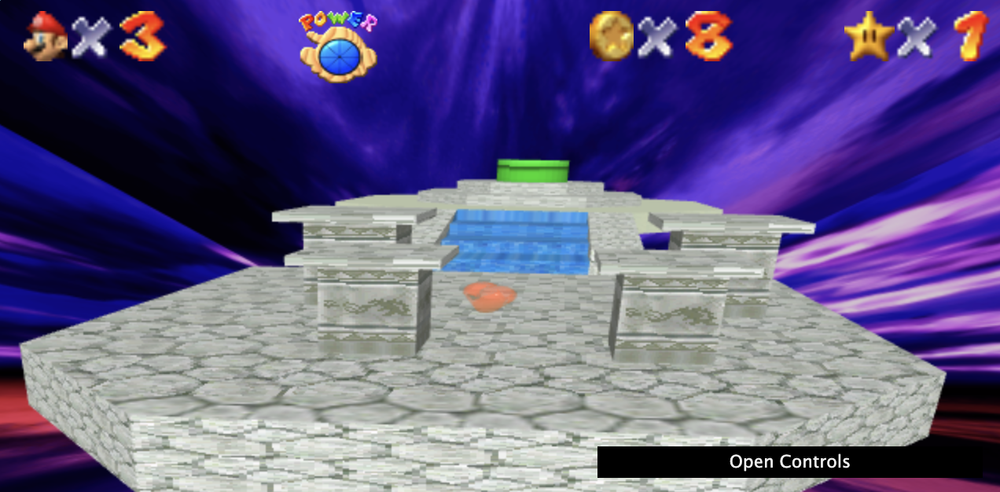
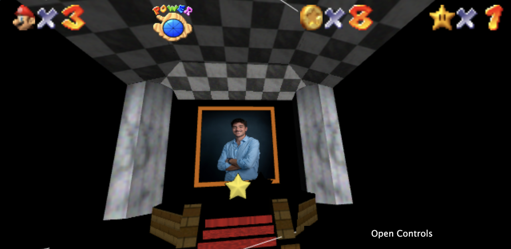
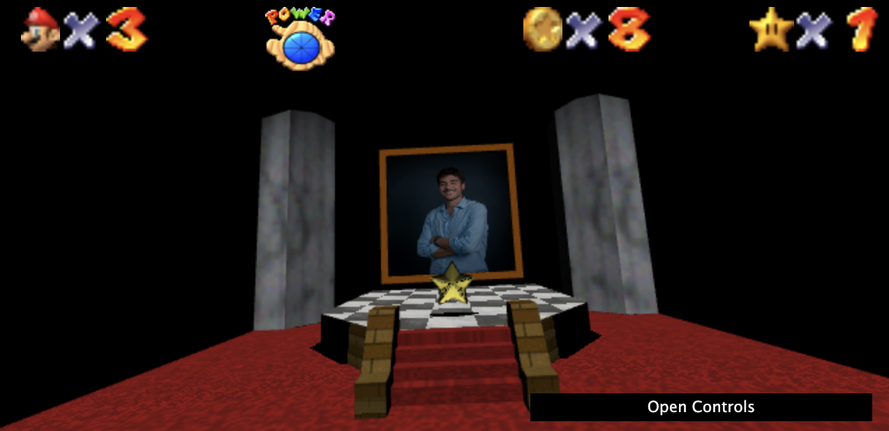

Christian Galeone
A.A. 2024-2025
Indice
Introduzione
Il progetto 'Super Mario 64 in WebGL' è stato realizzato come prova finale del corso "Fondamenti di Computer Graphics M".
L'obiettivo del progetto è quello di sviluppare un'applicazione web interattiva con scena tridimensionale, utilizzando la libreria grafica WebGL, Javascript e il linguaggio di shading OpenGL ES SL.
Per scoprire tutti i requisiti del progetto, visitare README.md
Il risultato del progetto è una simulazione di tre scene iconiche del videogioco Super Mario 64.

Architettura
L'architettura del progetto parte da un template HTML di Intellij IDEA, ed è stato strutturato in directories nel seguente modo:
assets
directory che contiene tutte le immagini, i font, gli audio, i file json e i file obj necessari alla realizzazione della scena.
File JSON
I file JSON sono stati utilizzati come file di configurazione per caricare la scena. Essi contengono tutto i dati necessari per rappresentare gli elementi della scena.
css
contiene i fogli di stile. Per conoscenze e comodità è stato utilizzato il framework TailwindCSS, che ha velocizzato il processo di realizzazione dello stile del sito.
lib
contiene i file di libreria, ovvero tutte le funzioni utili create dall'autore (considerati interni).
resources
contiene le risorse esterne fornite dal professore per la realizzazione del progetto.
src
cartella sorgente che contiene la logica dell'applicazione.
Di seguito viene mostrata la struttura della directory src

Per la realizzazione del progetto è stato seguito il principio di separazione previsto dal clean code, in questo modo ogni classe esegue soltanto ciò che è di sua competenza.
La classe scene agisce come orchestratore: le classi vengono inizializzate e utilizzate al suo interno.
Breve spiegazione di cosa si occupa ogni file in breve:
Controller2d creazione del controller che simula un controller N64 con canvas 2D KeyController gestisce la interazioni utente via tastiera MouseController gestisce la interazioni utente via mouse TouchController gestisce la interazioni touch dell'utente App si occupa di caricare la scena e di gestire il cambio di contestoCamera gestisce la camera della scenaGUI gestisce l'interfaccia dei controlli basandosi sulla libreria dat_gui.jsLight gestisce le luci della scenaMeshObj si occupa del caricamento e della gestione degli model 3D Render si occupa di fare il render della scenaScene orchestratore e punto nevralgico dell'applicazioneShadow gestisce le ombre della scenaSkybox gestisce le skybox della scena (se presenti)
Interfaccia


L'interfaccia dell'applicazione è stata fatta a tema Super Mario 64: ho voluto realizzare qualcosa che richiamasse in tutto e per tutto il gioco,
per cui ho importato il font del gioco e cercato di sfruttarne anche i colori. Inoltre, l'interfaccia si presenta come una griglia in cui alla sinistra abbiamo
il nostro canvas dove vengono mostrate le scene, e vi è possibilità di selezionare tra tre scene iconiche del gioco; alla destra - o in basso su smartphone - invece,
c'è la sezione dedicata ai comandi: nella parte superiore potete trovare una tastiera touch che simula i bottoni fisici o, se preferite, si può cambiare
e passare al controller N64!
Per migliorare l'esperienza utente, ho inserito anche delle immagini che richiamino l'interfaccia del gioco (vedi parte superiore della scena) e ho
inserito le canzoni di ogni scena, che si caricano ogni volta che se ne seleziona una. In questo modo l'esperienza diventa del tutto immersiva!
Scena 1 (Bomb-Omb Battlefield)
Per soddisfare il requisito di inserire una immagine texture con la mia foto, ho pensato di riprodurre la stanza del primo livello, chiamato "Bomb-Omb Battlefield"
La stanza è molto semplice, e si presenta con un immenso quadro del livello con un palco sotto. In aggiunta, ho voluto inserire anche l'iconica stella del gioco, che in realtà non compare nella scena.
Scena 2 (Peach Castle)
Questa scena è stata quello che ha fatto iniziare tutto, il mio punto di ispirazione. Essendo una costruzione un po' più complessa, ho cercato
di semplificarla il più possibile, ma questo comunque mi ha portato alcuni problemi: sebbene se su Blender i modelli non avessero distorsioni,
su Web, invece, sono venuti fuori alcuni effetti che sono un po' fastidiosi.
In ogni caso ho deciso di tenere anche questa scena per mostrare il frutto del mio lavoro.
Scena 3 (Bowser In the Sky)
Proprio come nel gioco, questa rappresenta l'ultima scena prima del boss finale: una volta entrato in quel tubo,
per salvare Peach, Mario dovrà sfidare il suo acerrimo nemico Bowser. Per questo motivo, ho voluto inserire anche questa scena,
in cui ho potuto sperimentare l'utilizzo delle skybox. Ho cercato di utilizzare l'immagine originale, che non ha
una qualità elevata: per questo motivo, l'effetto può risultare un po' nauseante.
Per essere fedeli al gioco, all'interno della scena sono stati inseriti un cuore che ruota (a cui è stata applicata la trasparenza) e la moneta rossa.




Controllo Scena
Per il controllo delle impostazioni della scena, è stata utilizzata la libreria dat.GUI.
Grazie a questa è possibile gestire le impostazioni della camera, l'attivazione/disattivazione delle ombre e la gestione delle luci.
Riguardo l'interazione con l'utente, quest'ultimo può muoversi nella scena in tre modi diversi:
- Utilizzando la tastiera fisica
- Utilizzando il mouse
- Tramite Tocco
- Movimento del dito
- Interfaccia Tastiera
- Interfaccia Gamepad
I tasti per controllare il movimento la direzione di vista sono visibili nel menù laterale a destra.
Scene.js
Il file scene.js è il cuore dell'applicazione: agisce da orchestratore inizializzando tutte le classi di cui ha
bisogno si occupa del rendering della scena. Il suo costruttore è così formato:

Il costruttore di Scene esegue le seguenti operazioni:
- Inizializzazione contesto WebGL da canvas
- Inizializzazione WebGL Program a partire dagli shader
- Lettura del file di configurazione json per caricare gli elementi della scena
File di configurazione JSON
Il file scene.json è lo scheletro di ogni scena: qui vengono settate le impostazioni iniziali della scena.
In questo file viene impostato:
- Skybox
- Inizializzazione impostazioni camera - modificabili poi da menù
- Localizzato audio mp3 da caricare
- Inizializzazione impostazioni luce - modificabili poi da menù
- Caricamento modelli 3D Mesh - per ogni mesh viene specificato nome, path file
.obj e path file .mtl
- Inizializzazione Camera
- Inizializzazione Luci
- Inizializzazione Controller

Render.js
Il file render.js viene utilizzato per renderizzare l'intera scena. Per motivi di scope, questa funzione è stata messa all'esterno della classe Scene
Render base
La scene disegnata con il rendering base ha queste caratteristiche:
- supporto per texture e colori - grazie agli shaders
- luce diffusa
- specular lightning
Render avanzato
La tecnica di rendering avanzato che ho scelto per il mio progetto sono le ombre, realizzate con tecnica di shadow mapping.
Per poter generare le ombre la scena viene disegnata due volta, prima dal punto di vista della luce per generare una shadowmap,
poi dal punto di vista dell’osservatore utilizzando la shadowmap generata per capire se un punto è in ombra o meno.
Per la realizzazione, è necessario attivare il culling, tramite il comando gl.enable(gl.CULL_FACE). Per questo motivo le pareti della stanza diventano invisibili.


File di configurazione JSON
Il file scene.json è lo scheletro di ogni scena: qui vengono settate le impostazioni iniziali della scena.
In questo file viene impostato:
- Skybox
- Inizializzazione impostazioni camera - modificabili poi da menù
- Localizzato audio mp3 da caricare
- Inizializzazione impostazioni luce - modificabili poi da menù
- Caricamento modelli 3D Mesh - per ogni mesh viene specificato nome, path file
.obj e path file .mtl
- Inizializzazione Camera
- Inizializzazione Luci
- Inizializzazione Controller
Camera.js
Rappresenta la camera da cui viene osservata la scena.
Il punto di vista può essere spostato all'interno dell'ambiente 3D in maniera libera.
L'orientamento della camera viene definito (ma anche modificato) dai seguenti tre assi ortogonali espressi in coordinate globali:
position posizione nello spazio della camera.
forward vettore che punta davanti la camera.
right vettore che punta alla destra della camera.
up vettore che punta verso l’alto.
Metodi
Sono stati replicati i principali movimenti della produzione video.

scene.js
Rappresenta la scena 3D e si occupa di orchestrare
tutte le operazioni: dall'inizializzazione del canvas
al rendering della scena stessa.
All'istanziazione di un nuovo oggetto Scene, il metodo constructor
esegue le seguenti operazioni:
- estrazione il contesto WebGL dal canvas
- impostazione delle dimensioni della viewport
- compilazione degli shader program
- lettura del file json contenente le mesh da mostrare
- per ogni mesh indicata nel file json viene istanziato un
mesh_obj che viene salvato in una lista interna
all'oggetto Scene
- inizializzazione della camera, binding dei metodi di
input agli eventi: keys (tastiera), touch,
mouse e light (oggetto luce di scena)
Le mesh che verranno caricate e visalizzate sono indicate nel file json.
Questa metodologia rende possibile creare più scene diverse semplicemente
modificando i file json.
Di seguito è riportata la struttura del file json:
"meshes":[
{
"name":"mesh_1",
"obj_source":"./path/mesh.obj",
"mtl_source":"./path/mesh",
"position": [0, 0, 0]
}
]
Ogni entry ha le seguenti proprietà:
- name:
nome della mesh, usato per il debug
- obj_source:
percorso del file .obj
- mtl_source:
percorso del file .mtl
- position:
posizione iniziale della mesh.
Il valore dell'attributo position
viene sommato alle coordinate della geometria
della mesh, traslandolo nella posizione desiderata.
Metodi
async loadMesh( jsonPath )
Si occupa di leggere il file json contenente le mesh da caricare e
per ciascuno istanzia un oggetto mesh_obj che viene salvato in
scene.mesh_list.
getProjectionMatrix()
Si occupa di calcolare la projection matrix utilizzando la funzione
perspective(...) della libreria m4.js.
keyController()
Si occupa di intercettare gli input da tastiera e invoca le funzioni
che modificano la posizione e la direzione della camera.
Questo metodo è realizzato in modo da poter gestire più input
contemporanei e consentire, ad esempio, di muoversi e girare la
camera nello stesso istante.
Viene invocata ogni qualvolta viene disegnato un frame.
async prepareSkybox()
Si occupa di caricare la cubemap texture utilizzata per lo skybox.
I dati vengono poi salvati in scene.skybox.
async prepareShadow()
Si occupa di preparare i dati per la gestione delle ombre,
ovvero:
- compilazione degli shaders necessari
- creazione di una texture utilizzata come depth map
- impostazione dei valori utilizzati durante il rendering.
toggleShadows()
Si occupa gestire lo switch dallo shader program
con ombre a quello senza e viceversa.
draw()
Per motivi di scope non è un metodo della classe
Scene, ma una funzione a sé.
Si occupa di eseguire le seguenti operazioni:
- ridimensionare canvas e viewport in base alla grandezza della
finestra
- chiamare il metodo
keyController() per la
gestione degli input da tastiera
- calcolare la projection e la view matrix
- la matrice di vista viene ottenuta da
scene.camera che è un oggetto
Camera
- in base al valore di
scene.shadow.enable:
- viene eseguito il rendering con ombre
- viene eseguito il rendering senza ombre
Per il rendering è abilitato gl.BLEND quindi,
se il materiale di una mesh ha opacità minore di uno,
questo verrà disegnato con una trasparenza.

Rendering base
La scena disegnata con lo shader program di base ha
le seguenti caratteristiche:
- supporto per texture e colori
- luce diffusa
- specular lightning

Rendering con ombre
La tecnica di rendering avanzata implementata nel progetto
è il calcolo delle ombre, realizzata grazie alla tecnica
dello shadow mapping.
Per disegnare le ombre si disegna la scena dal punto di vista
della luce, che applica l'algoritmo dello Shadow Buffer, il
cui funzionamento è analogo a quello del Depth Buffer.
Il risultato di questo algoritmo è la Shadow Map, che descrive
quali punti delle mesh sono illuminate e quali no. Questa
mappa viene considerata insieme alla Depth Map generata dal
punto di vista dell'osservatore e si determina quali punti
sono da disegnare in ombra e quali no.

Torna all’indice
camera.js
Rappresenta la camera da cui viene osservata la scena.
Il punto di vista può essere spostato all'interno
dell'ambiente 3D in maniera libera.
L'orientamento della camera viene definito (ma anche
modificato) dai seguenti tre assi ortogonali espressi
in coordinate globali:
- position: posizione nello spazio
- forward: vettore che punta di fronte alla camera
- right: vettore che punta alla destra della camera
- up: View-up vector, punta verso l’alto
Metodi
I movimenti della camera sono presi da quelli utilizzati nella
produzione video.

tilt( step )
Ruota la visuale in alto o in basso, si ottiene ruotando
la camera rispetto al vettore right.
pan( step )
Ruota la visuale orizzontalmente, si ottiene ruotando
la camera rispetto al View-up vector.
truck( dist )
Modifica la posizione della camera lateralmente, lasciando
invariata la direzione della visuale. Si ottiene
moltiplicando il vettore right per dist e
sommando il risultato alla posizione attuale della camera.
pedestal( dist )
Alza o abbassa la posizione della camera, si ottiene sommando
il prodotto tra il View-up vector e dist alla
posizione attuale della camera.
dolly( step )
Avvicina o allontana la camera al punto osservato,
si ottiene sommando alla posizione attuale il
prodotto tra dist e il vettore forward.
realign()
Riallinea la vista della camera all'orizzonte.
getViewMatrix()
Calcola e restituisce la viewMatrix. Il calcolo
viene eseguito utilizzando i metodi della
libreria m4.js.
getPosition()
Restituisce la posizione della camera.
Torna all’indice
mesh_obj.js
Questa classe si occupa di gestire le mesh visibili, dal
loro caricamento fino al rendering.
Il costruttore prende le informazioni relative a una
mesh contenute in una entry del file json, quali:
- percorso del file .obj
- percorso del file .mtl
- posizione della mesh rispetto all’origine
Le mesh sono salvate nella cartella project/data,
alcuni sono stati scaricati da internet, mentre altri sono
stati disegnati su Blender.
Il formato utilizzato per l'utilizzo con WebGL è Wavefront obj,
a cui è associato il file mtl che descrive le proprietà dei
materiali che compongono le mesh.
Metodi
prepareMesh( gl )
Si occupa di creare i buffer per passare gli attribute al
vertex shader, per fare ciò sfrutta la funzione
createBufferInfoFromArrays(gl, data) della
libreria webglUtils.js.
Si occupa di disegnare la mesh utilizzando lo shader
program e gli uniform specificati nei parametri.
Tramite le funzioni della libreria webglUtils.js
vengono passati attribute e uniform allo shader
program. Utilizzando la funzione
webglUtils.drawBufferInfo(gl, bufferInfo)
viene invocata la gl.drawElements o la
gl.drawArrays in base alla presenza degli
indici o meno.
Torna all’indice
Riferimenti
Per la realizzazione del progetto, oltre alle slide e al codice visto
durante il corso, è stato fatto riferimento ai seguenti articoli:
Torna all’indice